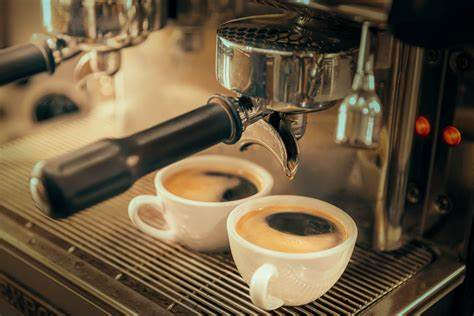

Máquina de Espresso
R$ 899,90
Descrição do Produto
Leve a experiência do Café Álvaro de Campos para sua casa. Com esta máquina de espresso, você pode se tornar seu próprio barista. Projetada para ser elegante e funcional, ela possui 15 bar de pressão para extrair um café cremoso e aromático. O bico vaporizador permite criar lattes e cappuccinos com a espuma perfeita. A qualidade profissional ao seu alcance.
Material: Aço inoxidável escovado e plástico ABS de alta resistência.
Pressão: 15 bar.
Recursos: Bico vaporizador, aquecedor de xícaras, bandeja de gotejamento removível.
Voltagem: 220V (consulte disponibilidade para 110V).
Adicionar ao Carrinho Voltar para a loja